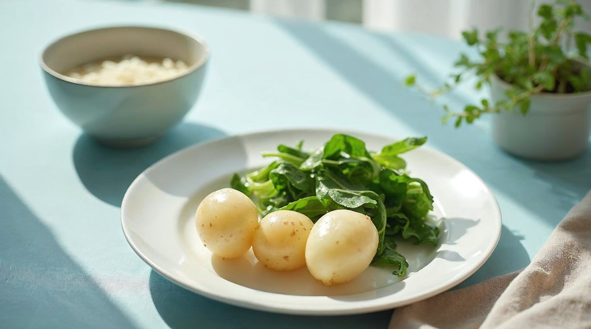
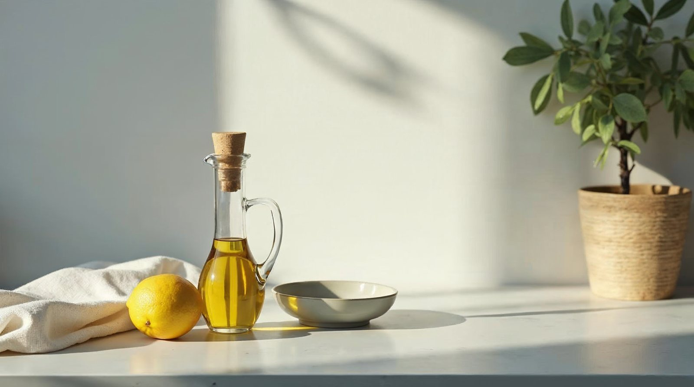
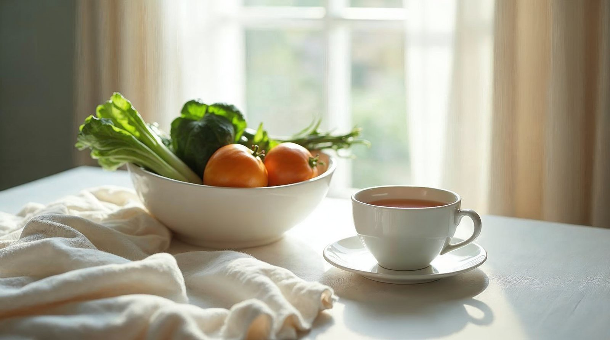
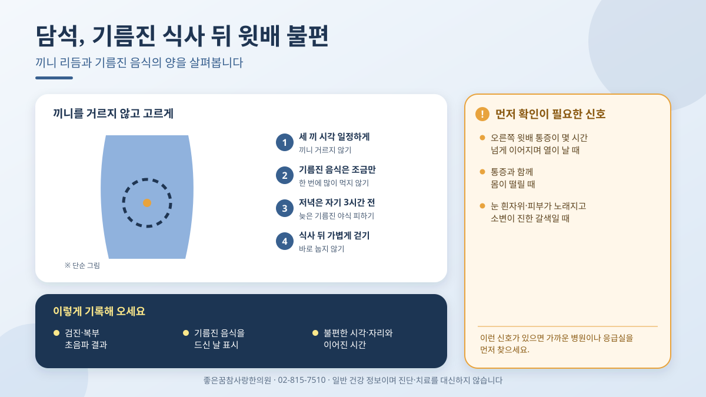

이종호 한의사 감수좋은꿈참사랑한의원 대표원장 (한의사 면허번호 19769)발행 2026-11-26 · 수정 2026-11-26
이 글의 차례
회식 자리에서 삼겹살과 튀김을 실컷 먹고 들어온 밤입니다. 자려고 누웠는데 명치 오른쪽 아래가 묵직하게 뻐근해 오고, 등 오른쪽 날개뼈 쪽까지 뻐근함이 번집니다. 체한 것 같아 소화제를 먹고 한참을 뒤척이다 겨우 잠이 들었습니다. 그러고 보니 지난 검진 때 '담석'이라는 말을 들었던 기억이 납니다.
담석은 검진 복부 초음파에서 생각보다 흔하게 발견됩니다. 결과지에 담석이 적혀 있으면 덜컥 겁이 나서 당장 수술해야 하는지 물으시는 분도 계시고, 반대로 아무 느낌이 없으니 잊고 지내는 분도 계십니다.
진료실에서 담석 이야기를 들으면 저는 두 가지를 나눠서 여쭙니다. 하나는 결과지에 적힌 소견이 무엇인지, 다른 하나는 실제로 몸이 어떤 불편을 느끼고 있는지입니다. 이 둘은 함께 갈 때도 있고 따로 갈 때도 있어서, 나란히 놓고 봐야 다음 걸음이 보입니다.
기름진 음식만 먹으면 속이 불편해서 고기 반찬을 아예 피하게 되었다는 분, 체한 줄 알고 몇 년을 소화제로 버텨 왔다는 분도 계십니다. 불편이 반복되면 식사 시간이 긴장의 시간이 되어 버립니다. 그 마음을 덜어 드리는 데서부터 시작하고 싶습니다.
왜 쓸개에 돌이 생길까요
쓸개는 간 아래에 붙어 있는 작은 주머니로, 담낭이라고도 부릅니다. 간에서 만든 쓸개즙을 모아 두었다가, 기름진 음식이 들어오면 주머니를 쥐어짜듯 수축해 쓸개즙을 장으로 내보냅니다. 쓸개즙은 기름을 잘게 나눠 소화를 돕는 역할을 합니다.
담석은 이 쓸개즙 성분이 뭉쳐서 생긴 작은 돌입니다. 콜레스테롤이 주성분인 돌이 가장 흔하고, 모래알처럼 작은 것부터 손가락 마디만 한 것까지 크기가 다양합니다. 하나만 있기도 하고 여러 개가 함께 있기도 합니다.
쓸개즙의 성분 균형이 흐트러지거나 쓸개가 수축을 잘 하지 않아 즙이 오래 고여 있으면 돌이 생기기 쉬워집니다. 그래서 체중이 많이 늘었거나 짧은 기간에 크게 빠진 경우, 끼니를 자주 거르는 경우, 임신 중이나 출산 뒤에 담석이 생기는 분이 많습니다.
증상이 없는 담석과 증상이 있는 담석
검진에서 우연히 발견된 담석의 상당수는 평생 별다른 증상 없이 지냅니다. 그래서 증상이 없는 담석은 대개 정기적으로 지켜보는 쪽으로 안내받는 경우가 많습니다. 다만 돌의 크기나 담낭 벽의 모양, 다른 질환 여부에 따라 달라질 수 있으니 결과를 설명한 선생님의 안내를 따르시는 것이 좋습니다.
증상이 생기는 경우는 대개 돌이 쓸개의 출구를 잠깐 막을 때입니다. 쓸개는 즙을 내보내려고 세게 수축하는데 출구가 막혀 있으니, 오른쪽 윗배나 명치가 쥐어짜듯 아프고 그 통증이 오른쪽 등이나 어깨 쪽으로 번지기도 합니다. 이런 통증을 흔히 담석 산통이라고 부릅니다.
이 통증은 기름진 식사 뒤 몇 시간 안에, 특히 밤에 시작되는 경우가 많고, 수십 분에서 몇 시간 이어지다가 가라앉곤 합니다. 한 번 이런 통증을 겪으셨다면 다시 생길 가능성이 있으니, 내과나 외과에서 앞으로의 방향을 상의해 두시길 권합니다.
통증이 있었던 날의 시각과 이어진 시간, 그 전에 드신 음식을 적어 가시면 상의하실 때 큰 도움이 됩니다. 통증이 가라앉은 뒤 며칠 동안은 기름진 음식을 줄이고 부드러운 식사로 쉬어 가시길 권합니다.
체한 것과 담석 통증은 어떻게 다를까요
체했다고 느끼는 불편과 담석 통증은 겉으로 비슷해 보여서 오래 헷갈리는 분이 많습니다. 몇 가지 차이를 알아 두시면 진료실에서 설명하실 때도 도움이 됩니다.
- 자리: 체한 느낌은 명치 한가운데가 꽉 막힌 듯하고, 담석 통증은 명치에서 오른쪽 갈비뼈 아래로 치우친 경우가 많습니다
- 번지는 곳: 담석 통증은 오른쪽 등, 날개뼈 아래, 오른쪽 어깨로 번지기도 합니다
- 시각: 담석 통증은 기름진 식사 뒤 몇 시간 지나, 특히 밤에 시작되는 경우가 흔합니다
- 모양: 체한 느낌은 더부룩하고 답답한 쪽이고, 담석 통증은 쥐어짜듯 세게 아파 자세를 바꿔도 잘 편해지지 않습니다
- 지속: 담석 통증은 대개 30분 넘게 이어지다가 서서히 가라앉습니다
물론 이 구분만으로 판단할 수는 없습니다. 위염이나 위궤양, 역류성 식도염, 췌장이나 심장의 문제도 비슷한 자리에 불편을 줄 수 있기 때문입니다. 비슷한 통증이 되풀이된다면 내과에서 복부 초음파 같은 검사로 확인해 보시는 것이 순서입니다.

쓸개를 떼어 낸 뒤에도 살필 것이 있습니다
담석으로 쓸개를 떼어 내는 수술을 받은 분도 진료실에 자주 오십니다. 쓸개가 없어도 간은 계속 쓸개즙을 만들어 장으로 내보내기 때문에 대부분은 일상생활을 잘 이어 가십니다.
다만 수술 뒤 한동안 기름진 음식을 먹으면 변이 묽어지거나 배가 꾸르륵거리는 분, 더부룩함이 오래 남는 분도 계십니다. 쓸개즙을 모아 두었다가 한꺼번에 내보내던 주머니가 없어지면서 몸이 새로운 흐름에 적응하는 시간이 필요하기 때문입니다.
수술 뒤 불편이 이어질 때는 먼저 수술한 병원에서 확인을 받으시고, 생활에서는 한 끼 양을 줄이고 기름진 음식을 한꺼번에 많이 드시지 않는 쪽으로 조절해 보시길 권합니다. 한의원에서는 그 과정에서 소화와 대변의 흐름을 함께 살필 수 있습니다.
결과지에 함께 적히는 말들
담석 결과지에는 다른 말이 함께 적혀 있는 경우가 많습니다. 담낭 용종은 쓸개 벽에 붙은 작은 혹으로, 대부분은 크기 변화를 지켜보도록 안내받습니다. 크기에 따라 검사 주기가 달라지니 결과를 설명한 선생님이 정해 준 주기를 지키시면 됩니다.
담낭 슬러지는 돌이 되기 전의 진흙 같은 찌꺼기를 말합니다. 끼니를 오래 거르거나 체중이 빠르게 빠지는 시기에 보이기도 하고, 생활이 일정해지면서 다시 보이지 않는 경우도 있습니다. 담낭 벽이 두꺼워졌다는 말이 있다면 염증 여부를 함께 확인하는 경우가 있습니다.
이런 단어들은 낯설어서 걱정을 키우기 쉽습니다. 결과지를 가져오시면 어떤 말이 적혀 있는지 함께 살펴보고, 결과를 설명한 내과나 외과에 무엇을 더 여쭤보면 좋을지 정리해 드립니다.
긴장과 잠, 그리고 쓸개
담석 통증이 반복되는 분들께 여쭤 보면, 바쁜 주간이나 잠을 설친 시기에 늦은 밤 기름진 식사가 겹친 경우가 많습니다. 끼니가 불규칙해지고 한 번에 몰아 먹게 되면 쓸개가 쉬다가 갑자기 세게 일해야 하는 상황이 되기 때문입니다.
그래서 진료실에서는 음식 목록만큼 하루의 리듬을 함께 봅니다. 아침을 거르고 점심을 늦게, 저녁을 많이 드시는 패턴이라면 아침에 가볍게라도 무언가를 드시는 것부터 바꿔 보시길 권합니다.
긴장이 큰 날에는 식사를 서두르게 되고, 어깨와 옆구리가 함께 굳어 있는 분도 많습니다. 식사 전에 숨을 몇 번 길게 내쉬고, 식후에는 바로 책상으로 돌아가기보다 10분쯤 천천히 걸어 보세요. 작은 쉼표 하나가 속의 부담을 덜어 줄 수 있습니다.
밤에 오른쪽 윗배가 뻐근해 깨는 날이 있었다면 그 전날 저녁 메뉴와 식사 시각을 함께 적어 두세요. 비슷한 날이 두세 번 모이면 어떤 식사가 쓸개에게 버거웠는지 훨씬 또렷해집니다.
체중 관리도 쓸개와 가깝습니다. 뱃살이 늘어난 시기에 담석이 함께 발견되는 분이 많아서, 허리둘레를 한 달에 한 번 재어 적어 두시길 권합니다. 체중을 줄이실 때는 끼니를 거르지 않고, 저녁 양을 조금씩 줄이는 방식이 쓸개에게도 부담이 적습니다. 지방간이나 콜레스테롤 소견이 함께 있다면 그 결과지도 같이 가져와 주세요.
먼저 이렇게 여쭙니다
결과지를 함께 펼쳐 놓고, 저는 대략 이런 순서로 여쭙니다.
- 담석은 언제, 어떤 검사에서 들으셨나요? 크기와 개수, 담낭 용종도 함께 적혀 있었나요?
- 내과나 외과에서 앞으로 어떻게 하자는 안내를 받으셨나요?
- 오른쪽 윗배나 명치가 아픈 적이 있나요? 몇 시간 이어졌나요?
- 불편은 어떤 음식을 먹은 뒤, 몇 시간 지나서 오나요?
- 대변이나 소변 색이 달라진 적은 없나요?
- 최근에 체중이 많이 늘거나 짧은 기간에 크게 빠진 적이 있나요?
모든 질문에 답하지 못하셔도 괜찮습니다. 검진 결과지와 지금 드시는 약만 챙겨 오셔도 충분히 이야기를 시작할 수 있습니다.

일상에서 먼저 해 볼 수 있는 것
담석이 있다고 해서 기름진 음식을 평생 모두 끊어야 하는 것은 아닙니다. 지방을 지나치게 피하면 쓸개가 수축할 기회가 줄어 오히려 즙이 고이기 쉽다는 이야기도 있습니다. 중요한 것은 한꺼번에 많이 먹지 않고, 끼니를 일정하게 지키는 것입니다.
- 끼니를 거르지 않고 하루 세 끼 시각을 대략 일정하게 맞추기
- 튀김, 삼겹살, 곱창처럼 기름이 많은 음식은 한 번에 많이 먹지 않기
- 늦은 밤 기름진 야식은 피하고, 저녁은 잠들기 세 시간 전까지 마치기
- 채소, 잡곡, 콩처럼 섬유질이 많은 음식을 끼니마다 곁들이기
- 체중을 줄이실 때는 굶기보다 천천히, 한 달에 몇 킬로그램 이내로 줄이기
- 식사 뒤 바로 눕지 않고 가볍게 걷기
짧은 기간에 체중을 크게 빼는 다이어트는 담석이 생기기 쉬운 상황 가운데 하나로 알려져 있습니다. 체중 관리가 필요하시다면 끼니를 거르기보다 양을 조금씩 줄이고 움직임을 늘리는 쪽으로 천천히 가시길 권합니다.
기름진 음식을 먹은 날 불편이 생기는지, 어떤 음식에서 유독 불편한지를 몇 주 적어 보시면 내 몸이 특히 버거워하는 음식이 보이기 시작합니다. 모든 기름을 끊기보다 그 음식부터 양을 줄여 보시면 됩니다.
한의원에서 함께 살필 수 있는 경우
- 담석은 지켜보자는 안내를 받았는데 기름진 식사 뒤 더부룩함과 묵직함이 반복되는 경우
- 쓸개 수술 뒤 소화가 더디고 변이 자주 묽어지는 경우
- 식사 뒤 오른쪽 옆구리와 등이 뻐근하고 입이 쓴 느낌이 이어지는 경우
- 긴장하거나 잠을 설친 날마다 속이 함께 불편해지는 경우
좋은꿈참사랑한의원에 오시면 모든 분께 그러듯 맥부터 짚습니다. 맥을 짚으며 식사와 대변, 잠, 입맛을 여쭙고, 필요하면 배와 옆구리를 살펴 불편한 자리를 확인합니다.
진찰한 내용을 바탕으로 생활에서 바꿔 볼 것 하나와 함께 침, 온열 관리, 한약 상담 가운데 지금 상태에 맞는 것을 정합니다. 한약을 상의할 때는 드시는 약을 모두 확인하고 신중하게 정합니다. 내과나 외과에서 처방받은 약은 상의 없이 멈추지 않습니다.
담석이 있는지, 수술이 필요한지를 정하는 일은 내과와 외과의 몫입니다. 한의원에서는 그 안내를 따르시는 동안 소화와 식사 리듬, 몸의 긴장을 함께 살피며 나란히 간다고 생각해 주시면 됩니다.
이렇게 기록해 오시면 상담이 쉬워집니다
담석으로 인한 불편은 식사와 시각에 따라 모양이 달라서, 짧게라도 적어 두시면 흐름이 잘 보입니다. 2주 정도 적어 보세요.
- 검진 결과지나 복부 초음파 결과
- 끼니 시각과 대략의 메뉴, 기름진 음식을 드신 날 표시
- 불편이 시작된 시각과 이어진 시간, 자리와 번진 곳
- 대변 색과 모양, 묽은 변이 있었던 날
- 잠든 시각과 깬 시각, 밤에 불편으로 깬 날
빠진 날이 있어도 괜찮습니다. 적어 오신 줄 가운데 눈에 띄는 날부터 함께 들여다보겠습니다.

쓸개와 편하게 지내기 위해
담석이 있다는 말은 무겁게 들리지만, 많은 분이 그 돌과 함께 일상을 잘 지내십니다. 결과지의 안내를 따라 정기 검사를 챙기고, 식사를 일정하게 지키는 것이 기본입니다.
이번 주에는 늦은 밤 기름진 야식 줄이기, 끼니 시각 맞추기, 식후 가볍게 걷기 가운데 하나만 골라 보세요. 다음에 오시면 그 일주일 동안 식사 뒤 속이 어땠는지부터 여쭙겠습니다.
이런 증상은 먼저 확인이 필요합니다
- 오른쪽 윗배가 심하게 아프거나 통증이 몇 시간 넘게 이어지는 경우, 열이 나며 몸이 떨리는 경우
- 눈 흰자위나 피부가 노래지거나, 소변이 진한 갈색이 되거나, 대변이 회색빛으로 변한 경우
이런 신호가 있으면 한의원보다 가까운 병원이나 응급실을 먼저 찾으세요.
함께 읽으면 좋은 글
- 위내시경에서 만성 위염이라는 말을 들었을 때 무엇을 알아두고 어떻게 살피나요?
- 식사 뒤에 속이 더부룩한 것은 무엇 때문이고, 속쓰림과는 어떻게 다른가요?
- 건강검진에서 지방간이라는 말을 들었을 때 생활에서 무엇을 점검하나요?
- 콜레스테롤과 중성지방 수치가 높게 나오면 생활에서 무엇부터 보나요?
- 소화가 오래 불편할 때 한의원에서는 무엇을 먼저 묻나요?

여쭙는 것
- 담석은 언제, 어떤 검사에서 들으셨나요? 크기와 개수, 담낭 용종도 함께 적혀 있었…
- 내과나 외과에서 앞으로 어떻게 하자는 안내를 받으셨나요?
- 오른쪽 윗배나 명치가 아픈 적이 있나요? 몇 시간 이어졌나요?
생활에서 해 볼 것
- 끼니를 거르지 않고 하루 세 끼 시각을 대략 일정하게 맞추기
- 튀김, 삼겹살, 곱창처럼 기름이 많은 음식은 한 번에 많이 먹지 않기
- 늦은 밤 기름진 야식은 피하고, 저녁은 잠들기 세 시간 전까지 마치기
한의원에서 함께 살필 것
- 담석은 지켜보자는 안내를 받았는데 기름진 식사 뒤 더부룩함과 묵직함이 반복되는 경우
- 쓸개 수술 뒤 소화가 더디고 변이 자주 묽어지는 경우
- 식사 뒤 오른쪽 옆구리와 등이 뻐근하고 입이 쓴 느낌이 이어지는 경우
먼저 확인이 필요한 신호
- 오른쪽 윗배가 심하게 아프거나 통증이 몇 시간 넘게 이어지는 경우, 열이 나며 몸이…
- 눈 흰자위나 피부가 노래지거나, 소변이 진한 갈색이 되거나, 대변이 회색빛으로 변한…
한눈에 보는 표
| 구분 | 핵심 |
|---|---|
| 여쭙는 것 | 담석은 언제, 어떤 검사에서 들으셨나요? 크기와 개수, 담낭 용종도 함께 적혀 있었나요? 내과나 외과에서 앞으로 어떻게 하자는 안내를 받으셨나요? |
| 생활에서 해 볼 것 | 끼니를 거르지 않고 하루 세 끼 시각을 대략 일정하게 맞추기 튀김, 삼겹살, 곱창처럼 기름이 많은 음식은 한 번에 많이 먹지 않기 |
| 한의원에서 함께 살필 것 | 담석은 지켜보자는 안내를 받았는데 기름진 식사 뒤 더부룩함과 묵직함이 반복되는 경우 쓸개 수술 뒤 소화가 더디고 변이 자주 묽어지는 경우 |
| 먼저 확인이 필요한 신호 | 오른쪽 윗배가 심하게 아프거나 통증이 몇 시간 넘게 이어지는 경우, 열이 나며 몸이 떨리는 경우 눈 흰자위나 피부가 노래지거나, 소변이 진한 갈색이 되거나, 대변이 회색빛으로 변한 경우 |
자주 묻는 질문
담석이 있으면 수술을 해야 하나요?
증상이 없는 담석은 정기적으로 지켜보도록 안내받는 경우가 많고, 통증이 반복되거나 다른 소견이 함께 있으면 수술을 권하기도 합니다. 결정은 내과나 외과에서 결과를 보고 상의해서 정하시는 것이 좋습니다.
담석이 있으면 기름진 음식은 모두 끊어야 하나요?
모두 끊기보다 한 번에 많이 드시지 않는 쪽을 권합니다. 끼니를 일정하게 지키고, 유독 불편이 따라오는 음식을 찾아 그것부터 양을 줄여 보세요.
한약으로 담석을 없앨 수 있나요?
담석을 없애는 일을 한약으로 약속드리지는 않습니다. 한의원에서는 내과와 외과의 안내를 따르시는 동안 소화와 식사 리듬, 몸의 불편을 함께 살피고, 한약은 드시는 약을 확인하고 신중하게 정합니다.
쓸개를 떼어 냈는데 변이 자주 묽어요. 괜찮은 건가요?
수술 뒤 몸이 적응하는 동안 이런 불편이 있는 분이 있습니다. 먼저 수술한 병원에 알려 확인을 받으시고, 한 끼 양과 기름진 음식을 조절하며 소화 흐름을 함께 살펴보시면 됩니다.
좋은꿈참사랑한의원은 재진 때 지난번 이야기부터 이어서 여쭙니다. 진료시간과 예약은 오시는 길에서 확인하세요.
어디서 상담받을 수 있나요?
좋은꿈참사랑한의원은 서울 동작구 만양로2길 2 신성빌딩 3층·5층(서울 동작구 상도동, 7호선 상도역 3번 출구 근처)에 있습니다. 한의사 3명(이종호 대표원장, 조영기 수석진료원장, 정원영 진료원장)이 진료합니다. 진료시간은 평일 09:30~20:00(점심 13:00~14:00), 토·일·공휴일 09:30~15:00이며, 방문 전 전화로 확인을 권합니다. 예약은 네이버 예약, 카카오톡 상담, 전화 02-815-7510로 받습니다.
이 글은 일반적인 건강 정보이며 개인의 진단이나 치료를 대신하지 않습니다. 증상이 있거나 복용 중인 약이 있다면 진료를 통해 확인하세요. 치료 효과는 개인마다 다를 수 있습니다.
작성 기준: 일반적으로 알려져 있는 건강 정보를 참고해 정리했습니다(대표원장 감수). 증상 기록은 1~2주 동안 하루 1회, 비슷한 시간에 적어 오시면 지난 상태와 비교하기 쉽습니다.